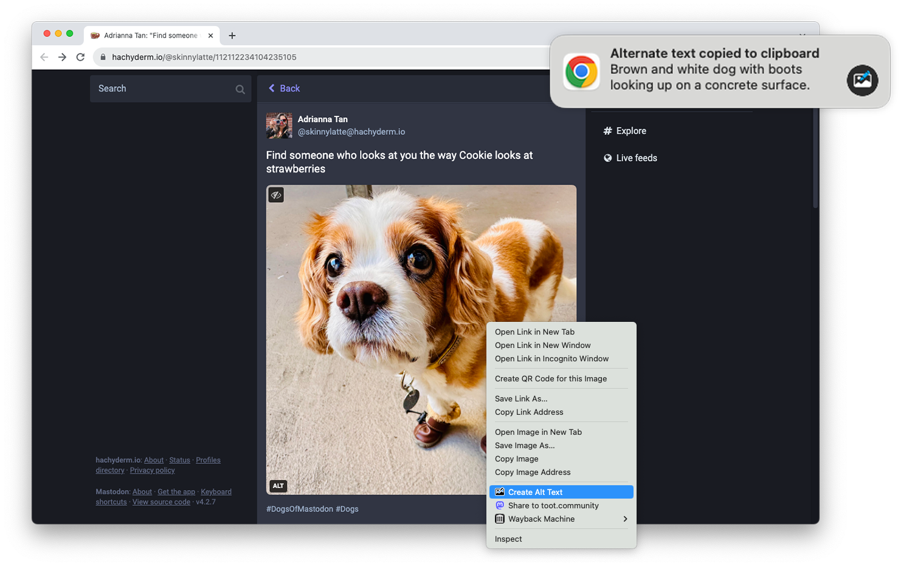

Images on web pages are supposed to have alternate text, which gives screen readers, search engines, and other tools a text description of the image. Alt text is critical for accessibility and search engine optimization (SEO), but it can also be time-consuming, which is why I am releasing Alt Text Creator!
Alt Text Creator is a new browser extension for Mozilla Firefox and Google Chrome (and other browsers that can install from the Chrome Web Store) that automatically generates alt text for image using the OpenAI GPT-4 with Vision AI. You just right-click any image, select “Create Alt Text” in the context menu, and a few seconds later the result will appear in a notification. The alt text is automatically copied to your clipboard, so it doesn’t interrupt your workflow with another button to click.
I’ve been using a prototype version of this extension for about three months (my day job is News Editor at How-To Geek), and I’ve been impressed by how well the GPT-4 AI model describes text. I usually don’t need to tweak the result at all, except to make it more specific. If you’re curious about the AI prompt and interaction, you can check out the source code. Alt Text Creator also uses the “Low Resolution” mode and saves a local cache of responses to reduce usage costs.
I found at least one other browser extension with similar functionality, but Alt Text Creator is unique for two reasons. First, it uses your own OpenAI API key that you provide. That means the initial setup is a bit more annoying, but the cost is based on usage and billed directly through OpenAI. There’s no recurring subscription, and ChatGPT Plus is not required. In my own testing, creating alt text for a single image costs under $0.01. Second, the extension uses as few permissions as possible—it doesn’t even have access to your current tab, just the image you select.
This is more of a niche tool than my other projects, but it’s something that has made my work a bit less annoying, and it might help a few other people too. I might try to add support for other AI backends in the future, but I consider this extension feature-complete in its current state.